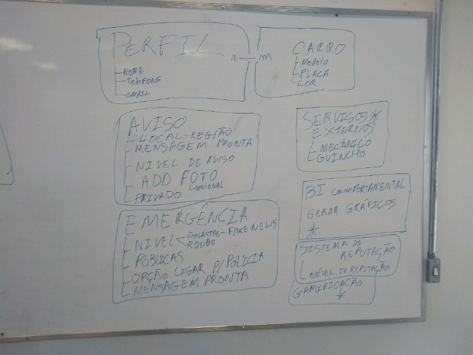
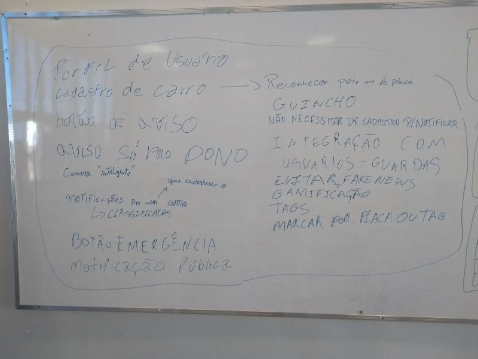
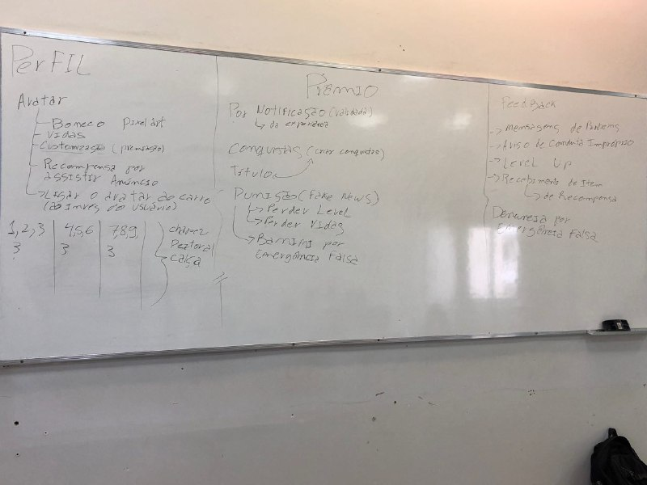
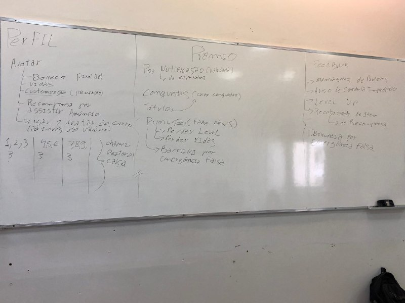

Elicitação de Requisitos
Índice
1. Introdução
Um processo genérico de levantamento e análise pode ter as seguintes atividades, segundo Sommerville:
2. Técnicas Utilizadas
Brainstorm
Brainstorming é uma técnica para geração de idéias. Ela consiste em uma ou várias reuniões que permitem que as pessoas sugiram e explorem idéias. Analisar as idéias é a fase final do brainstorming. Nessa fase é realizada uma revisão das idéias, uma de cada vez. As consideradas valiosas pelo grupo são mantidas e classificadas em ordem de prioridade.
Brainstorm 1: Funcionalidades do App/Requisitos
O primeiro Brainstorm realizado reuniu todas as pessoas doo grupo e foi feita um levantamente de ideias de funcionalidades que o app poderia ter, o fluxo que poderia seguir e também, foi onde primeiro surgiu a ideia de gamificação do app. Foi considerados app que já existem como referência para tomada de algumas decisões.
Brainstorm 2: Gamificação
Esse brainstorm teve seu foco diferecionado para gamificação. Foi discutido como o usuário poderia querer acessar mais o app se caso tivee algum tipo de conquista ou premiação. Ideias de categoria de usuário no app levando em consideração o tanto de notificações enviadas, tipos de avatar exclusivos, foram algum dos temas levantados. E surgiu o Plano de Gamificação do app.
 

Observação Participativa
A observação participativa é uma técnica usada para elicitar requisitos de uma forma participativa, onde o engenheiro de requisitos passa a agir como um determinado usuário para entender suas necessidades e funcionalidades.